● Musings · Essay
Curiosity killed the cat. So we killed curiosity.

Curiosity killed the cat. Maybe that’s why we kill curiosity at a young age. To protect our young ones from being burdened by curiosity. To relieve them of the dread of scientific temper. Scientific what? Temper? In an era when the History Channel is more popular than the Discovery Channel? Discovery Channel? What does that mean?
Maybe I am just lucky to have grown up in an era when misinformation was not so easy to spread. The corollary was that the right (or correct) information was also difficult to spread. But lucky I was to have grown up in the golden age of digital encyclopaedias—just before the dawn of Wikipedia. Some of the first multimedia encyclopaedias were coming out, from Compton’s and Britannica to Encarta. And I was lucky enough not to have the History Channel. You were stuck with Discovery.
But it was not just the English-speaking, cable-TV-watching, PC-owning folks who were lucky. There were regional-language programmes aired on local television channels too. Back before YouTube and Insta influencers started spouting utter nonsense under the garb of (pseudo)science, there were sensible (if dubbed) programmes on Telugu channels. These programmes captured the imagination of young kids. Well, at least the imagination of yours truly.
Fast-forward to today. You have all sorts of (mis)influencers. From fad diets to scaremongering to peddling blatant lies. Sometimes under the name of science. But mostly by ridiculing science.
There are self-styled godmen who use scientific explanations for everything they say. Certainly an evolved version of the godmen of my generation. Did I call them godmen? Sorry. They are called spiritual gurus. Perhaps because most of them are under the influence of a different, and more popular, kind of spirits.
Yes, I have been ranting. But when was the last time you saw someone come up with a solution without first ranting? On that note, I have one more rant.
How do you counter these (mis)influencers’ misinformation? It is not just misinformation. It has long since devolved into malinformation, with a very clear intent of malice. Yes, there are a tonne of people out there who have railed against these malfluencers. There are people who are dedicating their lives to debunking the claims.
But how many claims can you debunk? How much time do you spend saying that “this claim is wrong”, or that a person is wrong because of so-and-so?
I argue that we are falling into a trap that has been perfectly laid out. You spend two days building up an argument debunking an atrocious claim. I can come up with another atrocious claim in two minutes. There. Two days. Two minutes. There’s no winning.
Or is there? The way to fight this battle has to be different. No, you cannot debunk every stupid claim out there. This is a long battle. We have to play the long game. There’s no short winning strategy. Dig your trenches. And start preaching. Okay, not preaching. But you get the drift.
Where are your science popularisers? If that is not a word yet, let’s make it one now. And let’s start by building at the smallest level. Use the same medium: YouTube. No, we are not going to debunk anything. We shall just talk science. We talk about the wonders. Not as a news channel, but to genuinely convey the sense of wonder. And, lest we forget, we should give due credit to the Indian scientific heritage and history.
Our scientific heritage has been ridiculed by both sides of the political spectrum. The right wing made it an object of ridicule. The others, well—I say this with a heavy heart—ridiculed our scientific heritage. It wasn’t always so. The first generation of scientists in independent India was definitely left-leaning. And they did not ridicule our heritage.
Let’s start with this. This is where I am setting up my trench. I will mix tradition with the modern. Give credit where it is due. Appreciate that there is a rich heritage. Do not cede this ground to the malfluencers. We have to claim this legacy. This is our legacy. We are the spiritual successors of our rich heritage. Yes, yes, I see your frown. Not everything is good. Not everything is right with our heritage. But that is science, no? We make progress. What stands the test of time still stands. Others get superseded.
Make this a visual symbol: the mix of tradition and heritage with modernity. Shock and awe. Fusion. Whatever you want to call it. The look and feel of the YouTube content should reflect this, from the person presenting to the content itself. Please do not underestimate the power of visual symbolism. The main visual for Palki Sharma’s YouTube channel is not an accident but a carefully curated one. It is a departure from the Western-looking blazers. We have to learn from them, and create our own unique visual identity.
And the content. Embrace modern science, while embracing the science in our traditions (wherever it is). We do NOT need to talk about the science in our traditions, as long as we do not keep mocking it at every chance. Mocking will serve only one purpose: driving people away from us to the spiritual frauds. Let us not cede our ground. Let us stand firm. Let us regain the ground and our legacy, and lay the path forward.
Did curiosity really kill the cat? Let’s ask Schrödinger. Maybe it is alive. You never know until you open the box. Let us open the box and ensure that we keep both the cat and curiosity alive.
First written May 2025